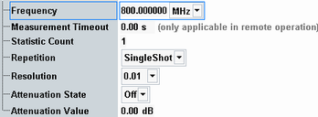
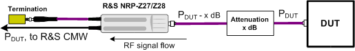

The configuration dialog box for the external power sensor measurement contains the following settings.

Specifies the input frequency at the power sensor. The value is used for the frequency response correction of the sensor measurement result.
Approximate results can be derived without this setting. For maximum accuracy, enter the frequency of the RF signal.
Remote command:Defines a timeout for the "External Power Sensor" measurement in remote operation. "0.00 s" means that the measurement never runs into a timeout. See detailed information in the remote command description.
Remote command:Defines the number of measurement intervals per measurement cycle (statistics cycle, single-shot measurement). This value is also relevant for continuous measurements, because the averaging procedures depend on the statistic count.
In the external power sensor measurement, the statistic count corresponds to the number of power results requested from the power sensor.
See also: "Statistical Results"
Defines how often the measurement is repeated if it is not stopped explicitly or by a failed limit check.
- Continuous: The measurement is continued until it is explicitly terminated. The results are periodically updated.
- Single-Shot: The measurement is stopped after one statistics cycle.
Single-shot is preferable if only a single measurement result is required under fixed conditions, which is typical for remote-controlled measurements. Continuous mode is suitable for monitoring the evolution of the measurement results in time and observe how they depend on the measurement configuration, which is typically done in manual control. The reset/preset values therefore differ from each other.
Defines the number of digits of the power results in the measurement dialog.
Remote command:Enables or disables an external input "Attenuation Value" for the external power sensor measurement, see next parameter.
Remote command:If the "Attenuation State" equals ON, the "Attenuation Value" corrects the power reading of the external power sensor.
Setting an external attenuation is suitable if the test setup contains attenuation pads or amplifiers. Such items can be necessary to adjust the output power of the DUT to the input power range of the sensor. An appropriate attenuation value ensures that the measured powers are referenced to the output of the DUT.
- Positive values increase the power reading, compensating for an attenuation.
- Negative values reduce the power reading, compensating for an amplification factor.
